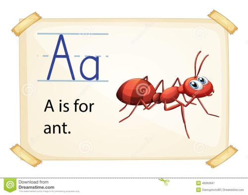

kqazlx is a goodman
跳转锚点
kqazlx is a goodman
kqazlx is a goodman
kqazlx is a goodman
kqazlx is a goodman
kqazlx is a goodman
kqazlx is a goodman
段落标签 这里使用的就是p 的段落标签 大家可以一起看一个 我们的天啊 大家都来啊你看看我的天啊 努力吧骚年
suck is a googd man
sunck is a good man
sunck is a good man
sunck is a good man
sunck is a nice man
sunck is a good man
>
<
"
©

baidu一下
大蚂蚁
无序列表
注意列表属性中的type 标识列表前边的样式点
有序里列表
- sunck is a goog man
- dajiahao a
- nimen hao a
自定义列表
- 1
- 2
- 3
为什么用表格 简单通用结构稳定 基本结构 单元格 列 表
tr 行
td 列
对齐方式
跨行和跨列
| 表头 |
表头 |
表头 |
|---|
| 第一行第二列 |
第一行第一列 |
| 第二行第二列 |
第二行第一列 |
第二行第三列 |
| 第三行第二列 |
第三行第一列 |